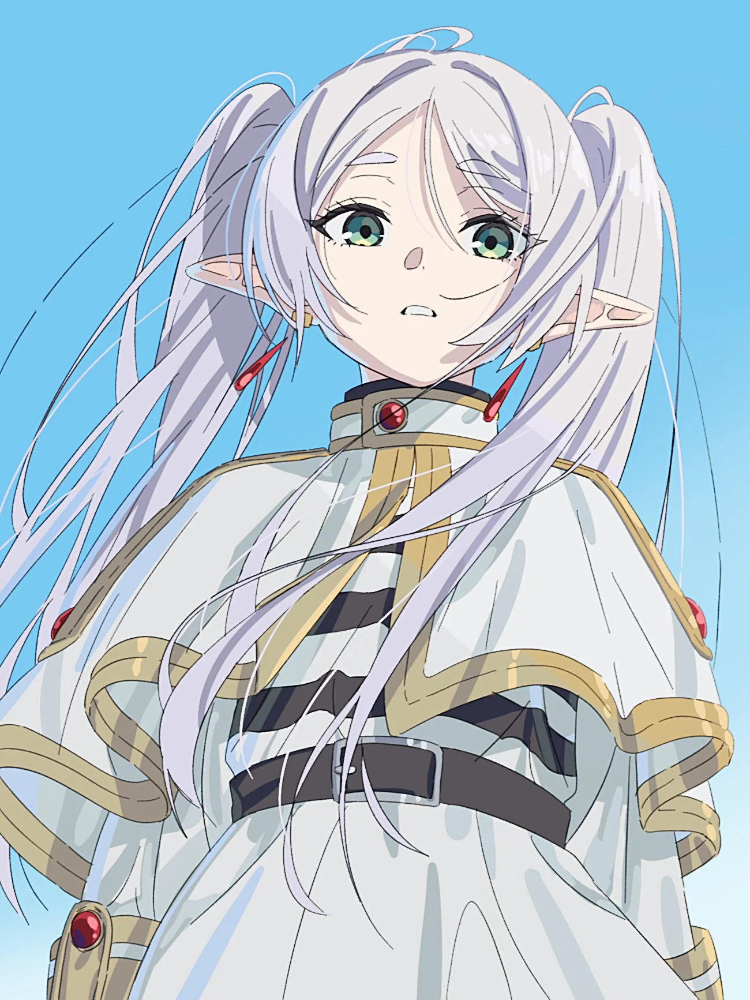

Ласкаво просимо до світу Фрірен
Фрірен — це не просто маг, а мандрівниця, яка шукає сенс у швидкоплинному житті. Після десятиліть подорожей з героями, вона усвідомлює, що найцінніше — це моменти, проведені з близькими.
Чому варто подивитися цей шедевр?
Аніме "Проводжаюча в останній шлях Фрірен" (Sōsō no Frieren) — це зворушлива історія про дружбу, втрату та нові починання. Воно отримало безліч нагород і вважається одним із найкращих аніме останніх років.
Ключові персонажі
✨ Фрірен
Ельфійка-маг, понад 1000 років
🔥 Ферн
Людина-маг, учениця Фрірен
⚔️ Штарк
Воїн, син воїна
👑 Гіммель
Герой, друг Фрірен
❓ Часті питання про Фрірен
Фрірен понад 1000 років. Як ельфійка, вона старіє дуже повільно.
Фрірен подорожує, щоб краще зрозуміти людей і виконати обіцянку, дану Гіммелю.
Так! Це один із найкращих тайтлів останніх років, який отримав безліч нагород.
Топ-3 улюблені епізоди фанатів
- Серія 1: "Подорож на довгі роки"
- Серія 10: "Сильний маг"
- Серія 26: "Наступного разу"

Розклад подорожей (вигаданий)
| Місце | Тип події | Епізод(и) |
|---|---|---|
| Столиця королівства | Початок подорожі | 1-2 |
| Місто вуглярів | Битва з демонами | 6-8 |
| Село душ | Спогади про Гіммеля | 12-14 |
| Земля магів | Іспит на першокласного мага | 17-22 |